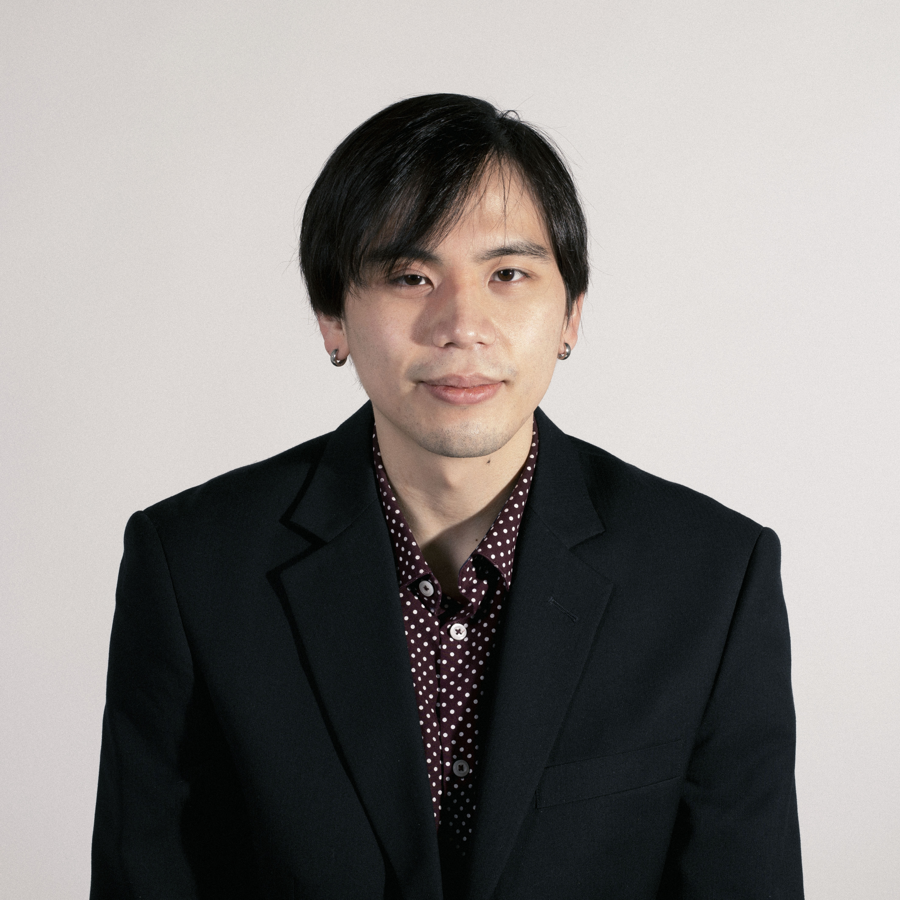

Bio

A graduate of Capilano University’s Jazz Studies program in 2022, Kao studied under Vancouver guitar legend Bill Coon and quickly distinguished himself as one of the program’s leading musicians. He earned top placement in the renowned Capilano A Band, where he performed on the BlueShore stage with internationally acclaimed artists including Peter Bernstein and Renee Rosnes. His time at Capilano laid the foundation for both his artistic direction and his professional career, grounding him firmly in the jazz tradition while encouraging individual expression.
Following graduation, Kao became an active and in-demand performer across Vancouver, steadily building a reputation within the city’s jazz community. He has shared the stage with many of his mentors and peers, including Capilano faculty members André Lachance and Bill Coon, and has studied informally with local piano virtuoso Bruno Hubert. During this period, he developed a distinctive musical voice rooted in early swing guitar, marked by rhythmic sensitivity, melodic clarity, and an understated but deeply felt sense of swing.
In 2024, Kao relocated to New York City to further his artistic development at the Tribeca Jazz Institute. There, he studied closely with modern guitar masters Peter Bernstein and Pasquale Grasso, immersing himself in the rigor and intensity of the New York jazz scene. Beyond formal instruction, Kao benefited from the city’s culture of mentorship, learning through nightly performances and collaborations with some of the finest musicians in contemporary jazz. During his time in New York, he performed with top-tier artists including drummer Rodney Green and bassist Alexander Claffy, both faculty members at the Institute.
Now based once again in Vancouver, Patrick Kao remains a vital presence on the local jazz scene as both a performer and educator. He continues to explore and expand the language of early jazz guitar while contributing meaningfully to the city’s musical ecosystem. Since returning, he has sold out performances at Frankie’s Jazz Club, leading and participating in projects featuring multi-instrumentalist and jazz prodigy John Lee, Cellar Music Group founder and saxophonist Cory Weeds, and longtime mentor Bruno Hubert. He regularly collaborates with the next generation of Vancouver’s finest musicians, bridging tradition and continuity within the scene.
With a deep respect for jazz history and a commitment to honest, swinging expression, Patrick Kao represents a new generation of jazz guitarists carrying the early swing tradition forward with authenticity, sensitivity, and quiet authority.